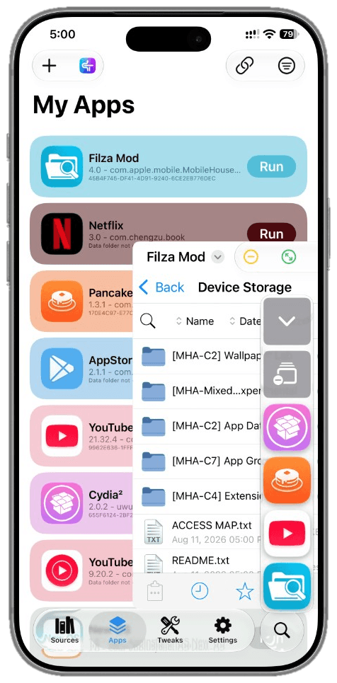

Storage management
A dedicated storage view shows app bundle sizes, container storage, temporary files, app group data, tweaks and related files, plus last-used information. Clean temporary files and caches directly from LiveContainer.
LiveContainer
Open-source launcher for multiple apps in isolated containers — with SideStore, JIT, and sandbox on iOS 15–17+.

Overview
LiveContainer is an open-source iOS app launcher that lets you run multiple iOS apps inside isolated containers — without jailbreaking your iPhone or iPad.
Manage and launch apps from one place while easing the usual limits of standard sideloading. Compatibility depends on your device, iOS version, and LiveContainer release.
What is LiveContainer?
LiveContainer runs guest apps inside its own sandbox instead of installing every IPA as a separate system application.
Apps launch inside LiveContainer’s environment — not as standalone system installs on your device.
Install LiveContainer, then import IPA files and manage them from inside the app.
Create multiple containers for the same app so different versions or data can coexist.
Features
Everything you need to install, launch, and manage compatible apps from one place.
Install and launch compatible IPA files inside LiveContainer without installing each application separately on your device.
Works without a jailbreak, so you can run additional iOS apps while keeping your device in a standard, non-jailbroken state.
Create separate containers for the same application with different data — useful for multiple configurations or versions.
Supports JIT-based workflows where available to improve compatibility and performance for certain applications and tools.
On supported iOS and iPadOS versions, compatible apps can run in multitasking windows. On iPad, apps can also use native-style window layouts.
Configure multiple LiveContainer instances to run different applications simultaneously, depending on your device and iOS version.
Add compatible apps to the Home Screen so you can launch them more directly without opening LiveContainer first.
Import IPA files, manage installed apps and containers, view storage usage, clear temporary data, and adjust application settings.
Available as a standalone IPA or as a LiveContainer + SideStore package for easier install and IPA management.
What's new
Recent LiveContainer releases include updates to app management, multitasking, JIT support, storage management, and iOS compatibility.
A dedicated storage view shows app bundle sizes, container storage, temporary files, app group data, tweaks and related files, plus last-used information. Clean temporary files and caches directly from LiveContainer.
Per-app settings, better window handling, additional animations, and improved dock behavior. Compatible apps can open in virtual windows that can be resized and scaled. On supported iPads, apps can use separate system-style windows.
Send URLs and files directly to compatible apps with the share extension. When an IPA is shared, you can install it inside LiveContainer or through the built-in SideStore when available.
JIT workflows through compatible tools, including StikDebug/StosDebug depending on the release and configuration.
Tweak-related workflows through TweakLoader on compatible configurations, with tweak management from the LiveContainer interface.
Recent releases include support for iOS 27 developer beta versions. Compatibility may vary between releases and devices.
Download
Download the latest LiveContainer IPA and installation files from a trusted source. Choose standalone LiveContainer or the LiveContainer + SideStore package.
Always use the latest compatible release and check the official project documentation for current requirements and known issues.
Compatibility
LiveContainer is designed for modern iOS and iPadOS — always check release notes before installing.
Devices
LiveContainer supports a wide range of modern devices running a compatible iOS or iPadOS version. Final compatibility depends on the installed OS and LiveContainer release.
Trust and setup
After installing LiveContainer or SideStore, you may need to trust the developer certificate before using the application.
On supported iOS versions:
Settings → Privacy & Security → Developer Mode
Depending on your signing method, you may also need to trust the developer profile under the appropriate device management settings.
Full installation walkthroughFAQ
Quick answers to the most common LiveContainer questions.
No. LiveContainer is designed to run without a jailbreak.
LiveContainer supports iOS/iPadOS 15 and later, with exact compatibility depending on the release and device.
Yes. LiveContainer allows you to manage multiple compatible applications inside its container environment.
Yes. Multiple containers can be created for supported applications, allowing different app data or configurations.
Yes. LiveContainer supports compatible iPad models running supported iPadOS versions. Multitasking and native window features are especially useful on iPad.
Recent releases include support for iOS 27 developer beta versions. However, beta compatibility can change, so always check the requirements for your LiveContainer version.
Yes. LiveContainer is available as a standalone version and a LiveContainer + SideStore version.
Yes. LiveContainer supports JIT-based workflows where the required device, iOS version, and JIT tool are compatible.
Yes. Supported apps can be added to the Home Screen for faster launching.
LiveContainer is an open-source project. Installation and signing requirements may vary depending on the sideloading method you use.
About this site
livecontainer.site is not the official LiveContainer website. Prefer official open-source builds only — closed third-party builds can read everything inside your containers.
Download the latest LiveContainer IPA, finish trust and signing setup, then import your first app.